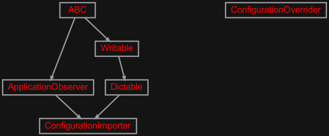
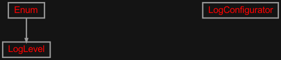
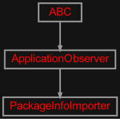
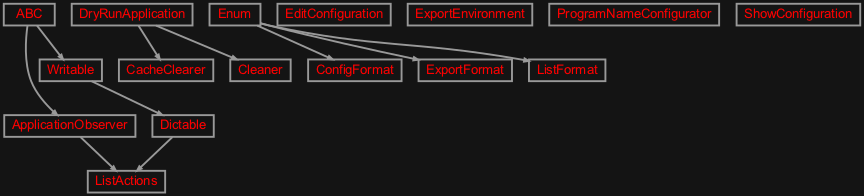

zensols.cli.lib namespace#
Submodules#
zensols.cli.lib.config#

Configuration merging first pass applications. These utility applications allow a configuration option and then merge that configuration with the application context.
- class zensols.cli.lib.config.ConfigurationImporter(name, config, expect=True, default=None, config_path_environ_name=None, type=None, arguments=None, section=None, config_path_option_name='config_path', debug=False, cache_path=None, config_path=None)[source]#
Bases:
ApplicationObserver,DictableThis class imports a child configuration in to the application context. It does this by:
Attempt to load the configuration indicated by the
--configoption.If the option doesn’t exist, attempt to get the path to load from an environment variable (see
get_environ_var_from_app()). For example, for packagezensols.util, the environment variableUTILRCenvironment variable’s path is used.If the environment variable is not found, then look for the UNIX style resource file (see
get_environ_path()). For example, packagezensols.utilwould point to~/.utilrc.Loads the child configuration.
Copy all sections from the child configuration to
config.
The child configuration is created by
ConfigurableFactory. If the child has a .conf extension,ImportIniConfigis used with its child set asconfigso the two can reference each other at property/factory resolve time.Special mnemonic
^{config_path}can be used in an :class`.ImportIniConfig` import section in the config_files property to load the referred configuration file in any order with the other loaded files. The special mnemonic^{override}does the same thing with theConfigurationOverriderone pass application as well.- CLI_META = {'first_pass': True, 'mnemonic_includes': {'merge'}, 'mnemonic_overrides': {'merge': '_merge_config_as_import'}, 'option_includes': {'config_path'}, 'option_overrides': {'config_path': {'long_name': 'config', 'short_name': 'c'}}}#
Command line meta data to avoid having to decorate this class in the configuration. Given the complexity of this class, this configuration only exposes the parts of this class necessary for the CLI.
- CONFIG_PATH_FIELD = 'config_path'#
The field name in this class of the child configuration path.
- See:
- ENVIRON_VAR_REGEX = re.compile('^.+\\.([a-z]+?)$')#
A regular expression to parse the name from the package name for the environment variable that might hold the configuration (i.e.
APPNAMERC).
- IMPORT_TYPE = 'import'#
The string value of the
typeparameter in the section config identifying anImportIniConfigimport section.
- __init__(name, config, expect=True, default=None, config_path_environ_name=None, type=None, arguments=None, section=None, config_path_option_name='config_path', debug=False, cache_path=None, config_path=None)#
-
arguments:
Dict[str,Any] = None# Additional arguments to pass to the
ConfigFactorywhen created.
-
cache_path:
Path= None# A path to a binary file of the cached configuration. This is useful for large application contexts that have a lot of imports that take a long time to load.
When this file is set, the imported configuration files and their modify timestamps are written along with the loaded configuration to this specified file. On subsequent runs, previous configuration is used if none of the configuration files have changed. Otherwise, they are reloaded and cached again.
-
config:
Configurable# The parent configuration, which is populated from the child configuration (see class docs).
-
config_path_environ_name:
str= None# An environment variable containing the default path to the configuration.
-
config_path_option_name:
str= 'config_path'# If not
None, the name of the option to set in the section defined for this instance (section =name).
-
default:
Path= None# Use this file as the default when given on the command line, which is not used unless :obj:
expectis set toFalse.If this is set to
skip, then do not load any file. This is useful when the entire configuration is loaded by this class and there are configuration mentions in theapp.confapplication context.
-
expect:
bool= True# If
True, raise anApplicationErrorif the option is not given.
- get_environ_path()[source]#
Return the path to the resource configuration file. This first uses
get_environ_var_from_app()to attempt to find an environment variable with a reference to file, then looks for it using the UNIX style file naming conventions (i.e. packagezensols.utilwould point to~/.utilrc).
- get_environ_var_from_app()[source]#
Return the environment variable based on the name of the application. This returns the
config_path_environ_nameif set, otherwise, it generates it based on the name returned from the packge +RCand capitalizes it.- Return type:
- merge()[source]#
Merge configuration at path to the current configuration.
- Parameters:
config_path – the path to the configuration file
- Return type:
-
section:
str= None# Additional which section to load as an import. This is only valid and used when
typeis set to import. When it is, the section will replace the string^{config_apth}(and any other field in this instance using the same syntax) and load indicated remaining configuration usingImportIniConfig.See the API documentation for more information.
-
type:
str= None# The type of
Configurableuse to create inConfigurableFactory. If this is not provided, the factory decides based on the file extension.- See:
- class zensols.cli.lib.config.ConfigurationOverrider(config, override=None, option_sep=',', disable=False)[source]#
Bases:
objectOverrides configuration in the app config. This is useful for replacing on a per command line invocation basis. Examples could include changing the number of epochs trained for a model.
The
overridefield either contains a path to a file that contains the configuration file to use to clobber the given sections/values, or a string to be interpreted byStringConfig. This determination is made by whether or not the string points to an existing file or directory.- CLI_META = {'first_pass': True, 'mnemonic_includes': {'merge'}, 'option_includes': {'override'}, 'option_overrides': {'override': {'metavar': '<FILE|DIR|STRING>', 'short_name': None}}}#
- OVERRIDE_FIELD = 'override'#
- __init__(config, override=None, option_sep=',', disable=False)#
-
config:
Configurable# The parent configuration, which is populated from the child configuration (see class docs).
-
disable:
bool= False# Whether to disable the application, which is useful to set to
Falsewhen used withConfigurationImporter.
zensols.cli.lib.log#

A first pass application to configure the logging system.
- class zensols.cli.lib.log.LogConfigurator(log_name=None, default_level=None, level=None, default_app_level=LogLevel.info, config_file=None, format=None, loggers=None, debug=False)[source]#
Bases:
objectA simple log configuration utility.
- CLI_META = {'first_pass': True, 'mnemonic_includes': {'config'}, 'mnemonic_overrides': {'config': 'log'}, 'option_includes': {'level'}, 'option_overrides': {'level': {'short_name': None}}}#
Command line meta data to avoid having to decorate this class in the configuration. Given the complexity of this class, this configuration only exposes the parts of this class necessary for the CLI.
- __init__(log_name=None, default_level=None, level=None, default_app_level=LogLevel.info, config_file=None, format=None, loggers=None, debug=False)#
- class zensols.cli.lib.log.LogLevel(value, names=None, *, module=None, qualname=None, type=None, start=1, boundary=None)[source]#
Bases:
EnumSet of configurable log levels on the command line. Note that we don’t include all so as to not overwhelm the help usage.
- crit = 50#
- debug = 10#
- err = 40#
- info = 20#
- notset = 0#
- trace = 5#
- warn = 30#
zensols.cli.lib.package#

First pass application to provide package information.
- class zensols.cli.lib.package.PackageInfoImporter(config, section='package')[source]#
Bases:
ApplicationObserverAdds a section to the configuration with the application package information. The section to add is given in
section, and the key/values are:name: the package name (
PackageResources.name)short_name: a shorter package name useful for setting in logging messages taken from
PackageResources.nameversion: the package version (
PackageResources.version)
This class is useful to configure the default application module given by the package name for the
LogConfiguratorclass.- CLI_META = {'always_invoke': True, 'first_pass': True, 'mnemonic_includes': {'add'}, 'mnemonic_overrides': {'add': '_add_package_info'}, 'option_includes': {}}#
Command line meta data to avoid having to decorate this class in the configuration. Given the complexity of this class, this configuration only exposes the parts of this class necessary for the CLI.
- __init__(config, section='package')#
-
config:
Configurable# The parent configuration, which is populated with the package information.
zensols.cli.lib.support#

General purpose first pass applications to support the build and configuration functionality.
- class zensols.cli.lib.support.CacheClearer(dry_run=False, config_factory=None, clearables=None)[source]#
Bases:
DryRunApplicationClear cached data by iterating through a list of application context instances that have a
clearmethod.- CLASS_INSPECTOR = {}#
- CLI_META = {'mnemonic_includes': {'clear'}, 'option_excludes': {'clearables', 'config_factory'}, 'option_overrides': {'clean_level': {'long_name': 'clevel', 'short_name': None}, 'dry_run': {'short_name': 'd'}}}#
- __init__(dry_run=False, config_factory=None, clearables=None)#
-
clearables:
Tuple[str,...] = None# A list of instance aliases (
<section>:<option>), each with their own list of instances to invokeclearto remove cached data.
-
config_factory:
ConfigFactory= None# The parent application context factory, which is populated from the child configuration (see class docs).
- class zensols.cli.lib.support.Cleaner(dry_run=False, paths=None, clean_level=0)[source]#
Bases:
DryRunApplicationClean (removes) files and directories not needed by the project. The first tuple of paths will get deleted at any level, the next needs a level of 1 and so on.
- CLASS_INSPECTOR = {}#
- CLI_META = {'mnemonic_includes': {'clean'}, 'option_excludes': {'paths'}, 'option_overrides': {'clean_level': {'long_name': 'clevel', 'short_name': None}, 'dry_run': {'short_name': 'd'}}}#
- __init__(dry_run=False, paths=None, clean_level=0)#
- class zensols.cli.lib.support.ConfigFormat(value, names=None, *, module=None, qualname=None, type=None, start=1, boundary=None)[source]#
Bases:
EnumOptions for outputing the action list in
ShowConfiguration.- ini = 2#
- json = 3#
- shell = 5#
- text = 1#
- yaml = 4#
- class zensols.cli.lib.support.DryRunApplication(dry_run=False)[source]#
Bases:
object- CLI_META = {'option_overrides': {'dry_run': {'short_name': 'd'}}}#
- __init__(dry_run=False)#
- class zensols.cli.lib.support.EditConfiguration(config_factory, section_name='config_cli', command='emacsclient -n {path}')[source]#
Bases:
objectEdits the configuration file given on the command line. This must be added after the
ConfigurationImporterclass.- CLI_META = {'mnemonic_overrides': {'edit_configuration': 'editconf'}, 'option_includes': {}}#
- __init__(config_factory, section_name='config_cli', command='emacsclient -n {path}')#
-
command:
str= 'emacsclient -n {path}'# The command used on the :function:`os.system` command to edit the file.
-
config_factory:
ConfigFactory# The configuration factory which is returned from the app.
- class zensols.cli.lib.support.ExportEnvironment(config, section, output_path=None, export_output_format=ExportFormat.bash)[source]#
Bases:
objectThe class dumps a list of bash shell export statements for sourcing in build shell scripts.
- CLI_META = {'option_includes': {'export_output_format', 'output_path'}, 'option_overrides': {'export_output_format': {'long_name': 'eformat', 'short_name': None}, 'output_path': {'long_name': 'eout', 'short_name': None}}}#
- OUTPUT_FORMAT = 'export_output_format'#
- OUTPUT_PATH = 'output_path'#
- __init__(config, section, output_path=None, export_output_format=ExportFormat.bash)#
-
config:
Configurable# The configuration used to get section information used to generate the export commands.
-
export_output_format:
ExportFormat= 1# The output format.
- class zensols.cli.lib.support.ExportFormat(value, names=None, *, module=None, qualname=None, type=None, start=1, boundary=None)[source]#
Bases:
EnumThe format for the environment export with the
ExportEnvironmentfirst pass application.- bash = 1#
- make = 2#
- class zensols.cli.lib.support.ListActions(list_output_format=ListFormat.text, type_to_string=<factory>)[source]#
Bases:
ApplicationObserver,DictableList command line actions with their help information.
- CLI_META = {'option_includes': {'list_output_format'}, 'option_overrides': {'list_output_format': {'long_name': 'lstfmt', 'short_name': None}}}#
- LONG_NAME_SKIP = 'add_ConfigFactoryAccessor_to_app_config'#
The
ActionCliMethodname to skip,which indicates the first pass action used to get the application in theCliHarnessused byConfigFactoryAccessor.
- OUTPUT_FORMAT = 'list_output_format'#
- __init__(list_output_format=ListFormat.text, type_to_string=<factory>)#
-
list_output_format:
ListFormat= 1# The output format for the action listing.
- class zensols.cli.lib.support.ListFormat(value, names=None, *, module=None, qualname=None, type=None, start=1, boundary=None)[source]#
Bases:
EnumOptions for outputing the action list in
ListActions.- json = 2#
- name = 3#
- text = 1#
- class zensols.cli.lib.support.ProgramNameConfigurator(config, section='program', default='prog')[source]#
Bases:
objectAdds a section with the name of the program to use. This is useful for adding the program name to the beginning of logging lines to confirm to UNIX conventions.
To add it to the logging output add it to the
LogConfiguratorsection’sformatproperty.Example:
[add_prog_cli] class_name = zensols.cli.ProgramNameConfigurator default = someprog [log_cli] class_name = zensols.cli.LogConfigurator format = ${program:name}: %%(message)s- CLI_META = {'always_invoke': True, 'first_pass': True, 'mnemonic_includes': {'add_program_name'}, 'option_includes': {}}#
- __init__(config, section='program', default='prog')#
-
config:
Configurable# The parent configuration, which is populated with the package information.
- create_section(entry_path=None)[source]#
Return a dict with the contents of the program and name section.
- class zensols.cli.lib.support.ShowConfiguration(config_factory, config_output_path=None, config_output_format=ConfigFormat.text, evaluate=False)[source]#
Bases:
objectThe class dumps a list of bash shell export statements for sourcing in build shell scripts.
- CLI_META = {'mnemonic_overrides': {'show_config': 'config'}, 'option_includes': {'config_output_format', 'config_output_path', 'evaluate', 'sections'}, 'option_overrides': {'config_output_format': {'long_name': 'cformat', 'short_name': None}, 'config_output_path': {'long_name': 'cout', 'short_name': None}, 'evaluate': {'long_name': 'eval', 'short_name': None}, 'sections': {'long_name': 'csec', 'short_name': None}}}#
- EVAL_NAME = 'evaluate'#
- OUTPUT_FORMAT = 'config_output_format'#
- OUTPUT_PATH = 'config_output_path'#
- SECTION_NAME = 'sections'#
- __init__(config_factory, config_output_path=None, config_output_format=ConfigFormat.text, evaluate=False)#
-
config_factory:
ConfigFactory# The configuration factory which is returned from the app.
-
config_output_format:
ConfigFormat= 1# The output format.